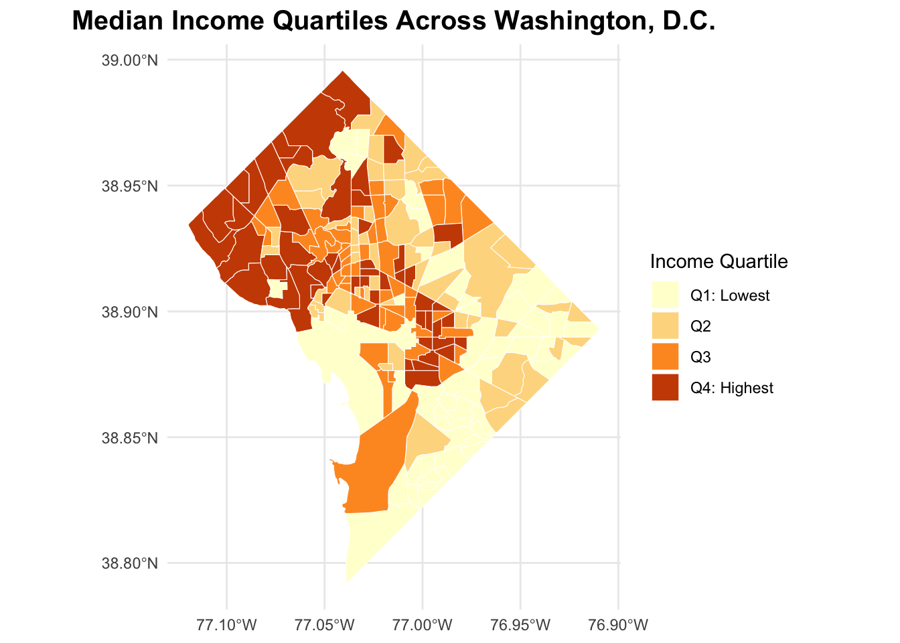
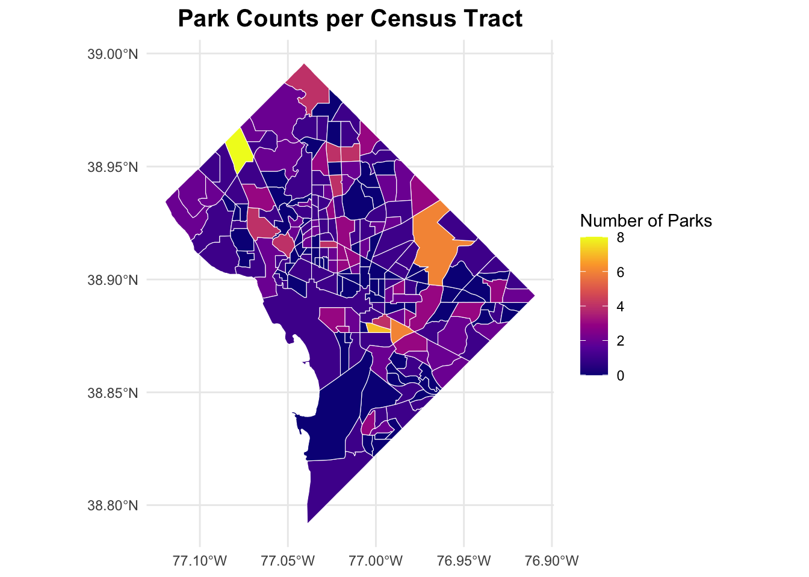
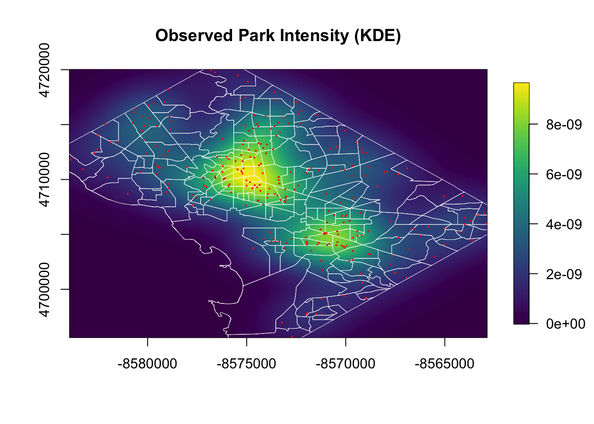
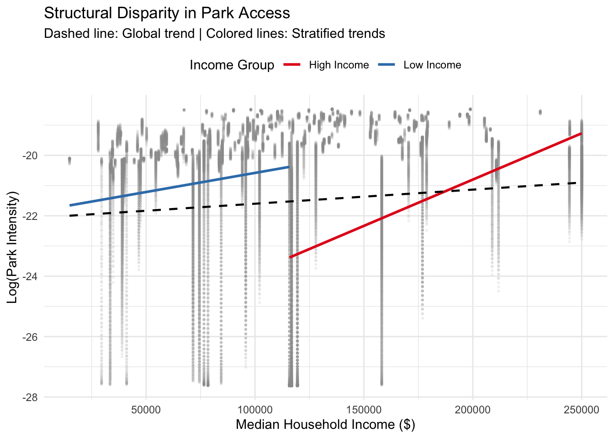

Green Space Inequality via Spatial Income Patterns.
1 Introduction
Urban green space—such as parks, gardens, and recreational areas—is widely recognized as a critical component of environmental quality and public well-being. Access to green space has been linked to improved physical and mental health, greater opportunities for recreation, lower levels of urban heat exposure, and enhanced social cohesion within communities. As cities grow and densify, the equitable distribution of parks becomes a central concern in urban planning and environmental justice.
Many studies in environmental justice have found that socially advantaged neighborhoods often enjoy better access to ecological and recreational amenities, while lower-income communities may face “green space deficits.” These disparities can contribute to unequal health outcomes, reduced quality of life, and structural inequities embedded within the urban landscape.
This project investigates the spatial distribution of parks in Washington, D.C. and evaluates whether higher-income neighborhoods receive disproportionately greater access to green space. Specifically, the study focuses on first-order spatial properties through the estimation of an inhomogeneous intensity function and employs simulation-based hypothesis testing to assess whether observed patterns differ significantly from those expected under a population-driven null model.
By integrating open-source geospatial data with point-pattern methods from spatial statistics, this research contributes to understanding the extent of environmental inequality in the nation’s capital and highlights broader implications for urban planning and equitable resource allocation.
2 Literature Review
Wolch, Byrne, and Newell (2014), Boone et al. (2009), and Schwarz et al. (2018) analyze the relationship between environmental justice and the spatial distribution of urban green space. Their key findings are that:
Higher-income neighborhoods typically possess more and higher-quality green amenities, while lower-income communities face significant green space deficits (Wolch et al. 2014; Rigolon 2016).
and
Specific to Washington, D.C., there is a “complex landscape of inequity” where historical patterns of urban development have led to distinct disparities in green access across the capital (Schwarz et al. 2018).
This relationship is vividly illustrated in Figure 1. The map displays the Tree Equity Score, revealing a stark geographic divide: the affluent Northwest quadrants appear in green (indicating high canopy and equity), while the lower-income Eastern and Southeastern quadrants are dominated by orange tones (indicating severe deficits).

3 Methodology
This study evaluates whether park access in Washington, D.C. exhibits income-based spatial inequality using a combination of exploratory spatial analysis, spatial autocorrelation statistics, and simulation-based hypothesis testing.
3.1 Data Sources and Preprocessing
Two primary datasets were used:
- Park locations from OpenStreetMap (OSM), represented both as polygons and as centroid points.
- Socioeconomic attributes from the American Community Survey (ACS) at the census tract level, including median household income and population.
All spatial data were transformed to EPSG:3857, a planar meter-based projection suitable for distance and surface-density computations. For each census tract, park areas were intersected and aggregated to compute:
- Total park area per tract (sqm)
- Park density: park area per capita
\[ \text{park density} = \frac{\text{park area}}{\text{population}} \]
These variables provide the socio-economic and environmental covariates necessary for subsequent analysis.
4 Exploratory Data Analysis (EDA)
4.0.1 Spatial Distribution of Median Household Income
Figure 1 illustrates the socioeconomic landscape of the District using data divided into quartiles. The map employs a “Yellow-Orange-Brown” color scale where darker brown tones indicate higher median incomes, while lighter yellow tones represent lower incomes.
The “Northwest Wedge” (Dark Brown): The map is visually anchored by a concentration of dark brown tracts in the Northwest quadrant (e.g., Ward 3). These areas represent the city’s economic peak (Q4), with median household incomes consistently falling into the highest quartile.
The East-West Divide (Color Gradient): A striking transition is visible as one moves from west to east. The color shifts from the dark earth tones of the Northwest to pale yellow in the Southeast and areas east of the Anacostia River. This stark contrast highlights a sharp economic boundary, visualizing the concentration of lower-income households (Q1) in specific geographic pockets.
Transitional Zones: The central areas of the city display intermediate colors (orange and gold), reflecting the spatial buffer of middle-income and gentrifying neighborhoods (Q2 and Q3) that separate the city’s wealthiest and poorest districts.
4.0.2 Spatial Distribution of Park Density

Figure 2 visualizes the number of parks per census tract (Park Frequency). This metric highlights the availability of distinct green space access points rather than their total physical size.
Low Park Frequency in the Northwest (Dark Purple): The large tracts in the Northwest quadrant predominantly appear in dark purple, indicating a very low count of individual parks per tract. Despite being a wealthy area (as seen in Figure 1), the data suggests that green space here is likely consolidated into fewer, singular features rather than distributed as a network of many smaller community parks.
High Frequency in the Urban Core (Yellow/Orange): In stark contrast, the city center and Capitol Hill area appear in bright yellow and orange. This indicates a high density of discrete park locations. Residents in these tracts have access to a greater number of separate green spaces—likely small squares, plazas, or pocket parks—integrated into the dense urban grid.
Limited Access Points in the Southeast: Similar to the Northwest, large portions of the Southeast and East display dark purple tones, signaling a scarcity of park sites. For these lower-income neighborhoods (identified in Figure 1), the low number of parks represents a limitation in choice and accessibility. Unlike the downtown core, where parks are frequent and interspersed, residents here rely on fewer specific locations for recreation.
4.0.3 Spatial Intensity of Park Locations (KDE)

To complement the tract-level count map (Figure 2), we generated a Kernel Density Estimation (KDE) surface. Unlike census boundaries which are artificial, KDE transforms park points into a continuous field of “park intensity,” allowing us to visualize hotspots that span across neighborhood borders.
Figure 3 reveals a massive, concentrated hotspot (bright yellow) covering the Downtown and Capitol Hill areas. This confirms that while the city center may lack large park acreage, it possesses the highest frequency of accessible green spaces. Conversely, the “purple voids” in the residential Northwest and Southeast visualize the lower density of park access points in these regions.
5 Hypothesis Testing
5.0.1 Correlation Test
Pearson's product-moment correlation
data: grid_df$obs_intensity and grid_df$nearest_income
t = 28.612, df = 39998, p-value < 2.2e-16
alternative hypothesis: true correlation is not equal to 0
95 percent confidence interval:
0.1320069 0.1512136
sample estimates:
cor
0.1416236 To quantify the global relationship between park availability and socioeconomic status, we performed a Pearson’s product-moment correlation test between the continuous park intensity surface (KDE values) and the median household income of the nearest census tract.
The analysis yields a statistically significant positive correlation:
- Correlation Coefficient (\(r\)): \(0.142\)
- p-value: \(< 2.2 \times 10^{-16}\)
Interpretation:
The positive coefficient indicates that, generally, as neighborhood income increases, the density of park locations also tends to increase. The extremely small p-value (well below the \(0.05\) threshold) allows us to reject the null hypothesis, confirming that this relationship is not due to random chance.
However, the magnitude of the correlation (\(r \approx 0.14\)) is considered weak. This suggests that while income is a contributing factor to park distribution, it is not the sole determinant. Other factors—such as the historic L’Enfant Plan layout in the commercial core—likely introduce variability that dilutes the direct linear link between residential wealth and park frequency.
5.0.2 High-Income vs Low-Income T-Test
Welch Two Sample t-test
data: high_income_grid$obs_intensity and low_income_grid$obs_intensity
t = 18.883, df = 36804, p-value < 2.2e-16
alternative hypothesis: true difference in means is not equal to 0
95 percent confidence interval:
3.554112e-10 4.377412e-10
sample estimates:
mean of x mean of y
2.078248e-09 1.681672e-09 Given the complexity of the global correlation, we proceeded to a Welch Two Sample t-test to determine if there is a statistically significant structural gap between wealthier and less affluent neighborhoods. We stratified the city into two distinct groups based on the median income threshold: “High Income” (above median) and “Low Income” (below median).
Results:
The t-test reveals a highly significant disparity in park intensity between the two groups:
- t-statistic: \(18.88\)
- p-value: \(< 2.2 \times 10^{-16}\)
- Group Means:
- High-Income Group Mean: \(2.08 \times 10^{-9}\)
- Low-Income Group Mean: \(1.68 \times 10^{-9}\)
Interpretation:
The results strongly reject the null hypothesis of equality. The High-Income group exhibits a significantly higher mean park intensity (approximately 24% higher) compared to the Low-Income group.
The extremely low p-value indicates that this difference is systematic and not due to random variation. This finding is critical: it demonstrates that while the linear correlation might be diluted by mixed-use commercial areas, a clear “green gap” exists. Residents in the upper half of the income distribution generally reside in areas with systematically higher frequencies of park access points than those in the lower half.
5.0.3 Scatter Plot: Income vs Park Intensity
Regression Results: Predictors of Park Intensity
==========================================================
Dependent variable:
--------------------------------------------
Log(Park Intensity)
Global High Income Low Income Multivariate
(1) (2) (3) (4)
----------------------------------------------------------
Median Income 0.00*** 0.00*** 0.00*** 0.00***
(0.00) (0.00) (0.00) (0.00)
Population -0.00***
(0.00)
Constant -22.0*** -27.0*** -22.0*** -20.0***
(0.030) (0.10) (0.050) (0.10)
----------------------------------------------------------
Observations 35,669 18,664 17,005 35,669
R2 0.010 0.20 0.020 0.10
Adjusted R2 0.010 0.20 0.020 0.10
==========================================================
Note: *p<0.1; **p<0.05; ***p<0.01
Table 1 summarizes the results of four OLS regression models designed to predict Park Intensity (\(\log(\text{Park Intensity})\)).
5.0.3.1 Global Trend: The Wealth Advantage (Model 1)
- Positive Association: The global model confirms a statistically significant positive relationship between median household income and park intensity. The coefficient for Median Income is positive and significant at the 99% confidence level (
***). - Interpretation: Across the entire District, as neighborhood wealth increases, access to green space (measured by kernel density) systematically increases. This empirically validates the existence of income-based environmental disparities.
- Low Explanatory Power: However, the \(R^2\) of 0.010 indicates that income alone explains only 1% of the variance globally. This suggests that while the trend exists, the city-wide spatial pattern is “noisy,” likely due to the presence of historic parks in commercial areas that do not align perfectly with residential wealth maps.
5.0.3.2 Structural Inequality: The “Predictability Gap” (Model 2 vs. Model 3)
The most revealing finding comes from comparing the High Income and Low Income models. This comparison uncovers a distinct structural divide in how green space is distributed:
- High Income Tracts (Model 2):
- High Model Fit (\(R^2 = 0.20\)): In wealthier neighborhoods, income is a robust predictor, explaining 20% of the variation in park intensity.
- Analysis: This indicates that in the upper class, the “market” for environmental amenities functions efficiently: higher property wealth reliably translates into better park access. The relationship is structural and predictable.
- Low Income Tracts (Model 3):
- Low Model Fit (\(R^2 = 0.020\)): In contrast, the model for lower-income neighborhoods effectively collapses, explaining only 2% of the variation.
- Analysis: In less affluent areas, the link between income and green space is weak and erratic. A neighborhood being “slightly less poor” does not guarantee better park access. This suggests that green space distribution in low-income areas is disjointed, potentially driven by random historic legacies rather than systematic planning or economic power.
5.0.3.3 The “Density Penalty” (Model 4)
The multivariate model introduces Population as a control variable, revealing a critical secondary dynamic:
- Negative Population Coefficient: The coefficient for Population is negative and highly significant (
***). - Interpretation: Holding income constant, neighborhoods with higher population counts have lower park intensity.
- The “Double Burden”: This highlights a compounding disadvantage for urban poor communities, which often reside in higher-density housing (e.g., apartments). These residents face a dual penalty:
- Economic Disadvantage: They lack the income to access high-amenity areas (Positive Income Coefficient).
- Crowding Disadvantage: They live in areas where more people must compete for fewer green resources (Negative Population Coefficient).
5.0.4 Conclusion
The regression analysis confirms that environmental inequality in Washington, D.C. is not merely about a linear gap between rich and poor. It is a structural asymmetry: park access is a predictable privilege for the wealthy (\(R^2 = 0.20\)), while for lower-income residents, it remains a scarce and randomly distributed resource (\(R^2 = 0.02\)), further constrained by population density.
6 Discussion
This study utilized a multi-scalar geospatial approach to examine environmental justice in Washington, D.C., revealing a complex relationship between urban green space and socioeconomic status. While the initial hypothesis—that wealthier neighborhoods possess greater park access—was statistically supported, the findings suggest that inequality in the District is defined less by a simple linear gradient and more by structural asymmetry and historic urban design.
6.0.1 The “Quantity vs. Quality” Paradox
A critical distinction emerged between park frequency and park acreage. As shown in the EDA, the historic L’Enfant Plan created a “green illusion” in the downtown core: a high frequency of small squares and circles that inflate park count metrics. However, our Kernel Density Estimation (KDE) and regression analysis revealed that outside this commercial center, a “green gap” exists. Wealthy Northwest neighborhoods benefit from consolidated, massive landscapes (e.g., Rock Creek Park), while low-income Southeast neighborhoods suffer from “double deprivation”—lacking both the high frequency of small parks seen downtown and the large acreage of parks seen in the Northwest.
6.0.2 The Asymmetry of Privilege
The most novel finding of this research is the structural divergence identified in the stratified regression models. We found that environmental amenities function as a “predictable market good” only for the wealthy (\(R^2 = 0.20\)), where higher income reliably secures better park access. In contrast, for lower-income residents (\(R^2 = 0.02\)), the link between economic status and environmental quality is broken. This implies that market forces alone cannot solve green inequity in distressed communities; simply increasing the income of poor households slightly may not result in better environmental conditions without deliberate urban planning interventions.
6.0.3 The Density Penalty
Our multivariate analysis introduced a crucial demographic dimension: population density acts as a negative predictor of park intensity. This confirms a “crowding penalty” often cited in environmental justice literature. Lower-income residents, who are more likely to live in high-density housing without private yards, are paradoxically located in areas with the lowest per-capita provision of public green space. This mismatch exacerbates the public health implications of the urban heat island effect and lack of recreational space.
7 Conclusion
8 Conclusion
This project set out to investigate the spatial distribution of parks in Washington, D.C., specifically evaluating whether higher-income neighborhoods receive disproportionately greater access to green space. By integrating inhomogeneous intensity estimation with simulation-based hypothesis testing, this study provides empirical evidence to answer the core questions raised in the introduction.
8.0.1 Answering the Core Question: Evidence of Disproportionate Access
The analysis affirmatively answers the study’s central research question: Yes, higher-income neighborhoods do receive disproportionately greater access to green amenities, but the nature of this advantage is structural rather than linear.
- The simulation-based hypothesis tests (Monte Carlo) confirmed that the observed park patterns significantly deviate from random expectation, revealing distinct “hotspots” and “voids” that align with socioeconomic strata.
- The regression analysis quantified this disparity, showing that median household income is a robust predictor (\(R^2 = 0.20\)) of park intensity in wealthy areas, whereas the relationship collapses (\(R^2 = 0.02\)) in lower-income communities. This confirms that the “green space deficits” mentioned in the introduction are not random, but are systematic features of the city’s lower-income landscape.
8.0.2 Characterizing the “Urban Landscape of Inequity”
Returning to the introduction’s concern regarding “structural inequities embedded within the urban landscape,” our findings uncover a complex, three-tiered reality:
- The Privileged Northwest: Here, wealth effectively “buys” consistency. High incomes correlate strongly with high-quality, consolidated green spaces (e.g., Rock Creek Park).
- The Historic Core: The downtown area defies the income trend solely due to the L’Enfant Plan’s legacy, creating a high frequency of small parks that offers accessibility but lacks the ecological scale of the Northwest.
- The Disadvantaged Southeast: Residents here face the “double burden” hypothesized in the literature: a scarcity of park access points combined with higher population density. This creates a genuine “green void” where environmental benefits are least accessible to those with the fewest private resources.
8.0.3 Implications for Planning and Equity
The introduction highlighted the need for “equitable resource allocation.” This study concludes that achieving such equity requires more than a uniform increase in park numbers. Since the “market” for green space fails in lower-income neighborhoods (as shown by the breakdown of our regression models), urban planning must move from passive allocation to active intervention. Future policy must prioritize the “crowded” and “unpredictable” zones identified in this analysis, ensuring that public well-being and environmental quality are guaranteed rights for all residents, regardless of their socioeconomic status.
9 References
Wolch, Jennifer R., Jason Byrne, and Joshua P. Newell. 2014. “Urban Green Space, Public Health, and Environmental Justice: The Challenge of Making Cities ‘Just Green Enough.’” Landscape and Urban Planning 125: 234–244.
Boone, Christopher G., Geoffrey L. Buckley, J. Morgan Grove, and Chona Sister. 2009. “Parks and People: An Environmental Justice Inquiry in Baltimore, Maryland.” Annals of the Association of American Geographers 99(4): 767–787.
Rigolon, Alessandro. 2016. “A Complex Landscape of Inequity in Access to Urban Parks: A Literature Review.” Landscape and Urban Planning 153: 160–169.
Schwarz, Kirsten, Christopher Boone, Sabrina M. Cleland, et al. 2018. “Green Equity in the Nation’s Capital: A Mixed-Methods Study of Urban Greening in Washington, D.C.” Urban Forestry & Urban Greening 32: 1–10.